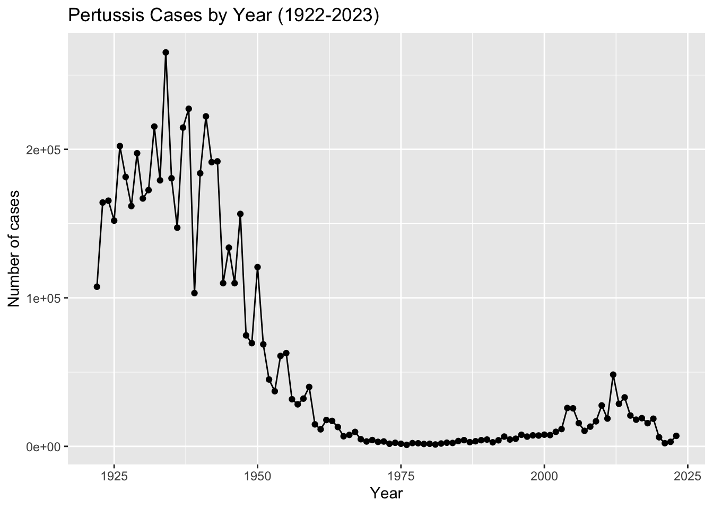

# install.packages("datapasta")
library (datapasta)
library(ggplot2)
cdc <- data.frame(
year = 1922:2023,
cases = c(
107473, 164191, 165418, 152003, 202210, 181411, 161799, 197371,
166914, 172559, 215343, 179135, 265269, 180518, 147237, 214652,
227319, 103188, 183866, 222202, 191383, 191890, 109873, 133792,
109860, 156517, 74715, 69479, 120718, 68687, 45030, 37129,
60886, 62786, 31732, 28295, 32148, 40005, 14809, 11468,
17749, 17135, 13005, 6799, 7717, 9718, 4810, 3285,
4249, 3036, 3287, 1759, 2402, 1738, 1010, 2177,
2063, 1623, 1730, 1248, 1895, 2463, 2276, 3589,
4195, 2823, 3450, 4157, 4570, 2719, 4083, 6586,
4617, 5137, 7796, 6564, 7405, 7298, 7867, 7580,
9771, 11647, 25827, 25616, 15632, 10454, 13278, 16858,
27550, 18719, 48277, 28639, 32971, 20762, 17972, 18975,
15609, 18617, 6124, 2116, 3044, 7063
)
)
ggplot(cdc) +
aes(x=year, y=cases) +
geom_point() +
geom_line() +
labs(x="Year", y="Number of cases", title= "Pertussis Cases by Year (1922-2023)" )